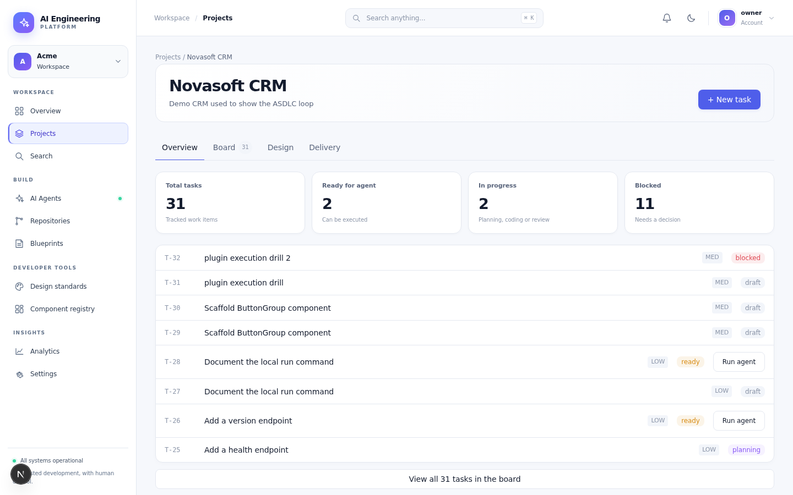
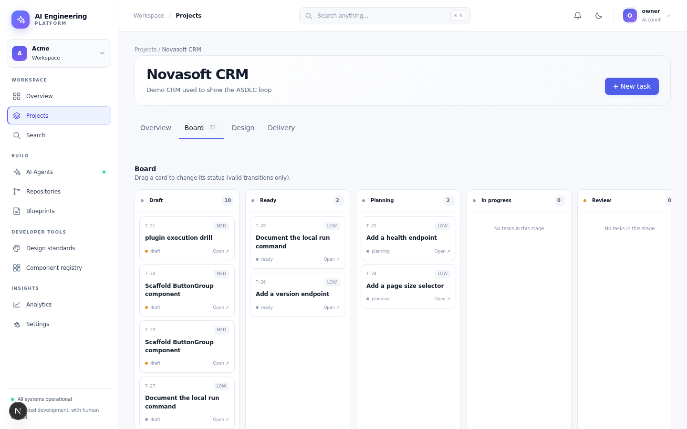
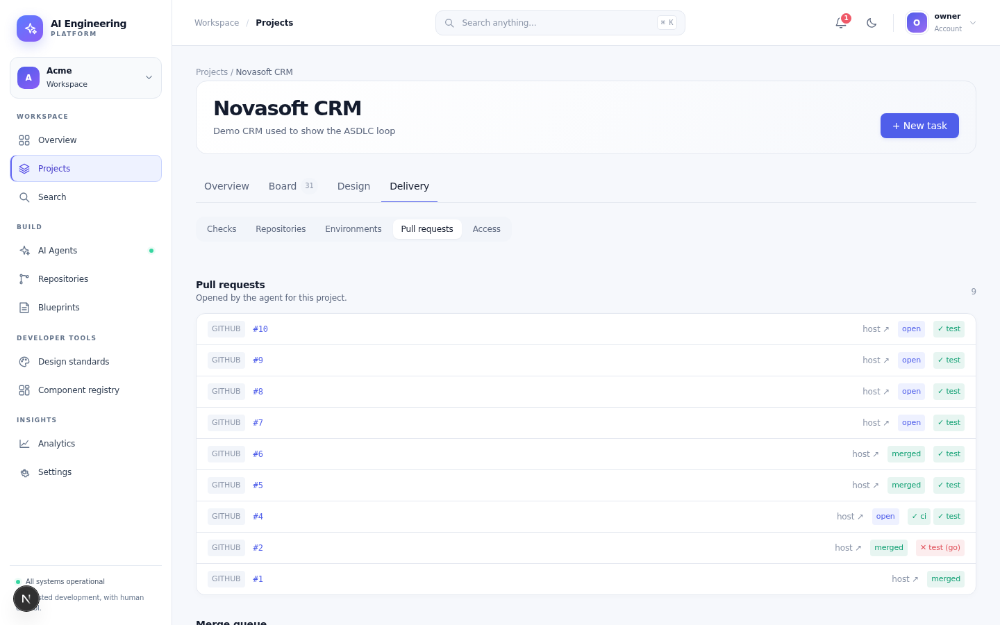

Gates, not vibes
Plan approval, test and design checks, acceptance proof and a separate PR approval. Merges stay human.
ASDLC · human-gated · audit-first
One platform for the complete software lifecycle: a task becomes an approved plan, a sandboxed implementation, tested changes, a pull request, and a merged outcome — with every gate recorded.
Why this exists
Most agent demos stop at a diff. A team needs approvals, isolation, reproducible context, evidence, a merge gate and a paper trail.
Plan approval, test and design checks, acceptance proof and a separate PR approval. Merges stay human.
Each run gets a disposable sandbox: read-only root, no capabilities, no network, bounded CPU and memory.
Frozen context, diffs, test reports, approvals and an append-only audit chain — queryable, not a screenshot.
The loop
Every step is a state transition with an owner, an artifact and a gate.
Start from a blueprint, write acceptance criteria and dependencies. A task cannot become ready without a definition of ready.
The planning agent inspects a frozen context — task, repository, rules, design standard — and proposes steps, files and risks. A human approves it.
The development agent works in a disposable container. No host access, no network. Changes are diffed, scanned and checked against policy.
Unit, integration, e2e, visual and plugin checks run. Acceptance evidence is validated. A pull request is opened; a second human gate approves the merge.
The merge queue serialises changes. DORA and outcome metrics — first-pass merge, proof validity, rework, escaped defects — feed the next decision.
Platform
The agent is one part. The product is the workflow, the guardrails and the evidence.
Stack, repository layout, test strategy, agents and starter tasks become a repeatable project template.
Role requirements, approval rules, change windows, diff limits, forbidden paths and allowed models/tools.
SSE events, frozen context, diff, test results, retries, artifacts and a baseline-vs-current visual compare.
Register a digest-pinned OCI agent per project. Allowlist, cosign verification and the same gates apply.
Project RBAC, OIDC, SAML SP, SCIM, API keys and per-organisation SSO. Owners never silently lose access.
Patroni Postgres, WAL/base backups, PITR, DR dashboard, audit witness, SIEM delivery and metrics.
One task, end to end
No hand-offs to a separate tool. The task, the approvals, the run and the outcome live in one place.

Project setup
A blueprint is the only entry point for creating a project. Stack, repository layout, test strategy, agents and starter tasks are defined once — then every project starts consistent.
A project board with acceptance criteria, dependencies and a definition of ready. The agent cannot start on a vague task.
The planning agent proposes steps, files and risks against a frozen context. A human approves the plan.
Implementation runs in a disposable sandbox. Tests, design checks and acceptance evidence are recorded before review.
A PR approval gate precedes the merge queue. The outcome updates delivery and quality metrics.

Result of one run
Inside the product
Seven screens from the running stack. Pick a step to see what the team actually works with.
Product tour · 7 steps
Every screenshot opens full size.

Health metrics, active projects and the next setup step. The team starts here, not in a chat box.

Tasks move through explicit columns. Dragging a card changes status only when the transition is valid — the agent cannot skip the definition of ready.

Title, context, acceptance criteria and design references are captured before an agent runs. The criteria become the proof the run must satisfy.

A real development run: plan, approval, sandboxed build, tests and review. The diff is the artifact that will be merged.

Delivery plus outcomes: lead time and approvals next to first-pass merge, proof validity and rework.

Every PR shows its required checks and review state. A human approval and the merge queue sit between a green diff and production.

WAL and base backup health, PITR requests, restore history and the offsite mirror — visible to the operator.
Security & operations
The model is not the security boundary. The runtime, approvals and recovery path are.
Quickstart
Docker Compose brings up the API, worker, web, Postgres, Redis and MinIO. The demo below is the local developer path.
Set AIP_AGENT_BACKEND=tools with a provider key, or select a registered custom agent plugin. The fake command backend is for e2e only.
# 1. configure
cp .env.example .env
make keygen
# 2. start the local stack
docker compose up -d postgres redis minio mailhog
make dev
# 3. open
web http://localhost:3000
api http://localhost:18080/readyz
minio http://localhost:9001Architecture
Go services, Postgres for state and queue, object storage for artifacts, and an isolated runtime for every agent run.
Engineering status
The core ASDLC is verified end-to-end, including ten concurrent PRs. Production hardening is tracked in the repository — fencing, multi-region and sync RPO are explicitly not claimed yet.
FAQ
No. Development produces a pull request; a separate PR approval and the merge queue gate the merge. The platform never auto-merges on its own.
Anthropic and OpenAI-compatible endpoints, or your own agent through the command backend or a digest-pinned custom agent plugin. BYOK lets an organisation use its own KMS key.
In a disposable Docker or Kubernetes sandbox: read-only root, no capabilities, no network by default, bounded CPU/memory and a tmpfs workspace. The host is never mounted into the run.
The task carries acceptance criteria. The development agent must emit an AIP_PROOF mapping evidence to every criterion; the platform validates the tests and files in the diff. Missing proof fails the run.
The core ASDLC is verified end to end. Production hardening is tracked honestly: host fencing, multi-region data planes and sync RPO are not claimed yet. See the status page.
Yes. The local path is Docker Compose; the HA path uses Patroni, HAProxy and PgBouncer. PostgreSQL, Redis, MinIO and a sandbox runtime are the main dependencies.
Documentation
A product guide for the people who use the platform, plus an API reference for the people who automate it.
Ready?